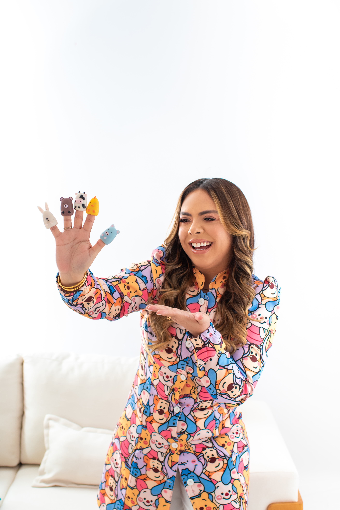

- Conheça a sua fono
Fga Janaina Coelho
CFOa: 8-12165
Olá! Meu nome é Janaina Coelho e sou fonoaudióloga especializada no desenvolvimento infantil. Minha missão é ajudar crianças a se comunicarem melhor, oferecendo um atendimento acolhedor e personalizado para cada necessidade.
Com anos de experiência na área, já ajudei muitos pequenos a superarem desafios na fala, linguagem e alimentação. Acredito que cada criança tem seu próprio ritmo e, por isso, utilizo abordagens lúdicas e eficazes para tornar o processo terapêutico leve e divertido.
Minha Abordagem
Avaliação individualizada para entender as dificuldades e potencialidades da criança.
Terapias baseadas em técnicas atualizadas e comprovadas na fonoaudiologia.
Trabalho próximo às famílias para estimular o progresso no dia a dia.